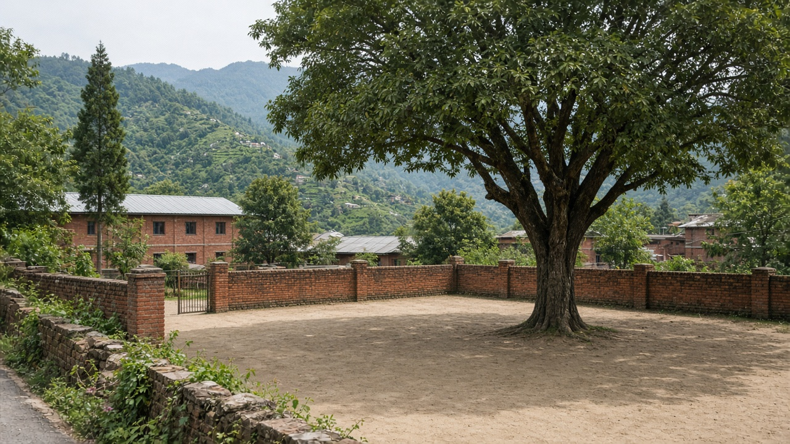
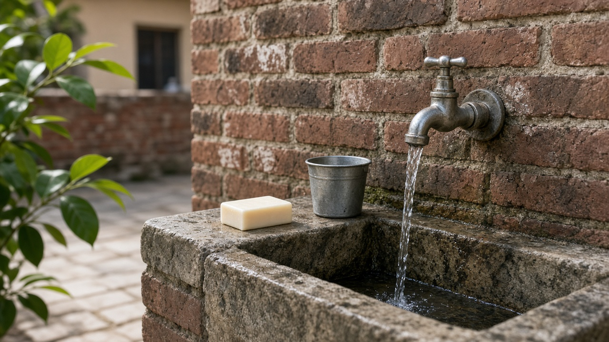
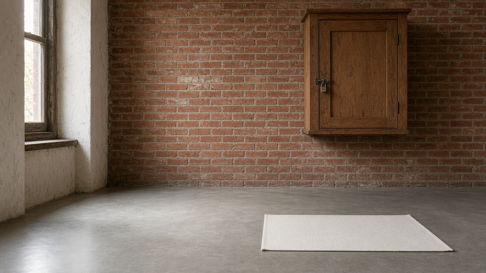

Children's Environmental Health
Published on August 20, 2026

Children are not small adults in toxicology. They breathe more air, drink more water, and eat more food per kilogram of body weight, and they crawl through dust and mouth objects that adults ignore. Windows of vulnerability open in the womb, in infancy, and at puberty, when organs and brains are still wiring. The same milligram of lead, pesticide, or solvent that a parent shrugs off can shift a child's intelligence, immunity, or growth. Hand-to-mouth behavior, longer remaining lifetime for cancer to appear, and incomplete detoxifying enzymes all raise the effective dose. Schools, playgrounds, and homes are therefore primary exposure settings, not afterthoughts to adult occupational rules.
Priority hazards include lead, mercury, pesticide drift, unsafe drinking water, mold, and chemicals in toys and cosmetics marketed to children. Poverty multiplies risk: crowded housing, informal work that children join, and diets low in iron and calcium increase absorption of some metals. Prenatal exposure can program later disease, so protecting pregnant people is child health. Pediatric clinics should take an environmental history—where the child sleeps, what water is used, whether renovation dust was generated—rather than treating every delay as purely genetic. Blood lead screening in high-risk areas is a classic public-health tool that still saves cognitive potential.
Policy should set stricter residue and toy-safety limits for products children use, require safe school water, and keep pesticides and solvents locked away from play spaces. Urban planning that puts playgrounds beside busy roads or waste sites fails the youngest residents first. Parents can wash hands before meals, wet-mop floors, and avoid imported cosmetics of unknown content, but they cannot test every toy; that is a regulator's job. Children's environmental health is the ethical core of toxicology: if a standard is not safe for a toddler on the floor, it is not a protective standard.

बालबालिका विषविज्ञानमा साना वयस्क होइनन्। उनीहरू किलोग्राम तौलअनुसार बढी हावा श्वास लिन्छन्, बढी पानी पिउँछन् र बढी खाना खान्छन्, र वयस्कले बेवास्ता गर्ने धुलोमा घिस्रन्छन् र वस्तु मुखमा राख्छन्। गर्भ, शिशुकाल र यौवनमा संवेदनशीलताका झ्याल खुल्छन् जब अंग र मस्तिष्क अझै तार जोड्दै हुन्छन्। अभिभावकले सामान्य मान्ने सिसा, विषादी वा विलायकको उही मिलिग्रामले बच्चाको बुद्धि, प्रतिरक्षा वा वृद्धि फेर्न सक्छ। हात-मुख व्यवहार, क्यान्सर देखिन बाँकी लामो जीवन, र अधूरा विष हटाउने इन्जाइम सबै प्रभावकारी मात्रा बढाउँछन्। त्यसैले विद्यालय, खेलमैदान र घर प्राथमिक सम्पर्क स्थल हुन्, वयस्क व्यावसायिक नियमका पछिल्ला विचार होइनन्।
प्राथमिक जोखिममा सिसा, पारो, विषादी बहाव, असुरक्षित पिउने पानी, ढुसी र बालबालिकालाई बेचिने खेलौना तथा सौन्दर्य सामग्रीका रसायन पर्छन्। गरिबीले जोखिम गुणन गर्छ: भीड घर, बच्चाले जोडिने अनौपचारिक काम, र फलाम तथा क्याल्सियम कम आहारले केही धातुको अवशोषण बढाउँछ। गर्भावस्थाको सम्पर्कले पछिको रोग कार्यक्रम गर्न सक्छ, त्यसैले गर्भवती जोगाउनु बाल स्वास्थ्य हो। बाल उपचार कक्षले प्रत्येक ढिलाइलाई शुद्ध आनुवंशिक नमानी वातावरणीय इतिहास लिनुपर्छ—बच्चा कहाँ सुत्छ, कुन पानी प्रयोग हुन्छ, मर्मत धुलो निस्क्यो कि। उच्च जोखिम क्षेत्रमा रगत सिसा जाँच स्थापित सार्वजनिक स्वास्थ्य औजार हो जसले अझै संज्ञानात्मक सम्भावना जोगाउँछ।
नीतिले बच्चाले प्रयोग गर्ने उत्पादनका लागि कडा अवशेष र खेलौना सुरक्षा सीमा राख्नुपर्छ, विद्यालयको पानी सुरक्षित बनाउनुपर्छ, र विषादी तथा विलायक खेल ठाउँबाट ताल्चा लगाएर राख्नुपर्छ। व्यस्त सडक वा फोहोर स्थल छेउ खेलमैदान राख्ने सहरी योजनाले सबैभन्दा कान्छा बासिन्दा पहिले असफल पार्छ। अभिभावकले भोजनअघि हात धुन, भुइँ भिजाएर पुछ्न र अज्ञात सामग्रीका आयातित सौन्दर्य वस्तु छोड्न सक्छन्, तर प्रत्येक खेलौना जाँच्न सक्दैनन्; त्यो नियामकको काम हो। बाल वातावरणीय स्वास्थ्य विषविज्ञानको नैतिक केन्द्र हो: भुइँमा बस्ने नानीका लागि मापदण्ड सुरक्षित छैन भने त्यो रक्षात्मक मापदण्ड होइन।

बच्चे विषविज्ञान में छोटे वयस्क नहीं हैं। वे किलोग्राम भार के अनुपात में अधिक हवा श्वास लेते, अधिक जल पीते और अधिक भोजन खाते हैं, और वयस्क जिनकी उपेक्षा करते हैं उस धूल में रेंगते और वस्तु मुँह में रखते हैं। गर्भ, शैशव और यौवन में संवेदनशीलता की खिड़कियाँ खुलती हैं जब अंग और मस्तिष्क अभी तार जोड़ रहे होते हैं। अभिभावक जो सामान्य मानें उस सीसा, कीटनाशक या विलायक का वही मिलिग्राम बच्चे की बुद्धि, प्रतिरक्षा या वृद्धि बदल सकता है। हाथ-मुँह व्यवहार, कैंसर दिखने को शेष लंबा जीवन, और अधूरे विष हटाने वाले एंजाइम सभी प्रभावी मात्रा बढ़ाते हैं। इसलिए विद्यालय, खेल मैदान और घर प्राथमिक संपर्क स्थल हैं, वयस्क व्यावसायिक नियमों के बाद के विचार नहीं।
प्राथमिक जोखिमों में सीसा, पारा, कीटनाशक बहाव, असुरक्षित पेयजल, फफूंद और बच्चों को बेचे खिलौने तथा सौंदर्य सामग्री के रसायन शामिल हैं। गरीबी जोखिम गुणित करती है: भीड़ भरा आवास, बच्चे जुड़ने वाला अनौपचारिक काम, और लौह तथा कैल्शियम कम आहार कुछ धातुओं का अवशोषण बढ़ाते हैं। गर्भावस्था का संपर्क बाद की बीमारी प्रोग्राम कर सकता है, इसलिए गर्भवती की रक्षा बाल स्वास्थ्य है। बाल उपचार कक्ष को हर देरी को शुद्ध आनुवंशिक न मानकर पर्यावरणीय इतिहास लेना चाहिए—बच्चा कहाँ सोता है, कौन सा जल उपयोग होता है, मरम्मत धूल निकली या नहीं। उच्च जोखिम क्षेत्रों में रक्त सीसा जाँच स्थापित सार्वजनिक स्वास्थ्य उपकरण है जो अभी संज्ञानात्मक संभावना बचाता है।
नीति को बच्चों के उपयोग वाले उत्पादों के लिए कड़ी अवशेष और खिलौना सुरक्षा सीमा रखनी चाहिए, विद्यालय जल सुरक्षित बनाना चाहिए, और कीटनाशक तथा विलायक खेल स्थानों से ताला लगाकर रखने चाहिए। व्यस्त सड़क या कचरा स्थल के पास खेल मैदान रखने वाली शहरी योजना सबसे छोटे निवासियों को पहले असफल करती है। अभिभावक भोजन से पहले हाथ धो सकते, फर्श गीला पोंछ सकते और अज्ञात सामग्री के आयातित सौंदर्य वस्तु छोड़ सकते हैं, पर हर खिलौना जाँच नहीं सकते; वह नियामक का काम है। बाल पर्यावरणीय स्वास्थ्य विषविज्ञान का नैतिक केंद्र है: फर्श पर बैठे नन्हे के लिए मानक सुरक्षित नहीं तो वह रक्षात्मक मानक नहीं है।